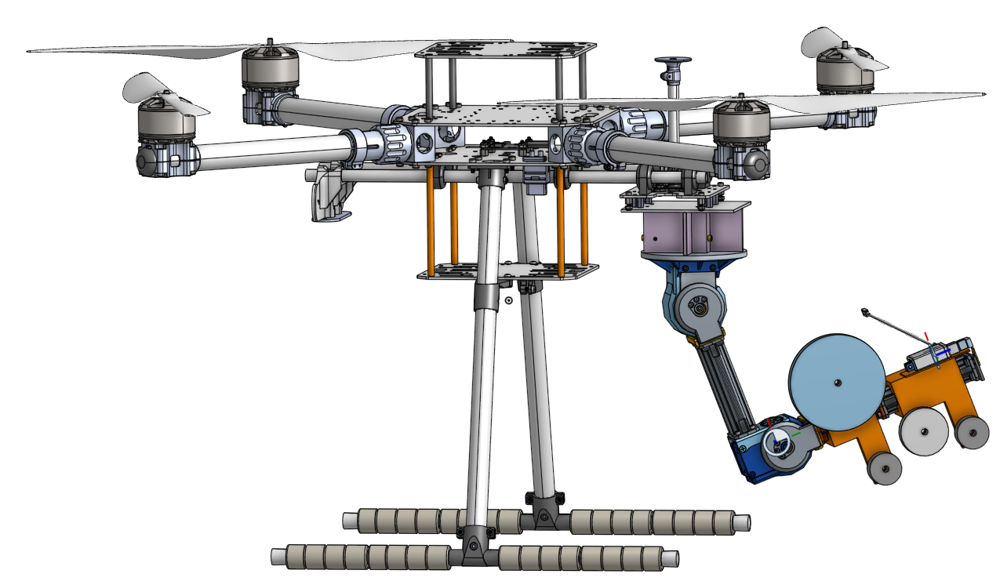
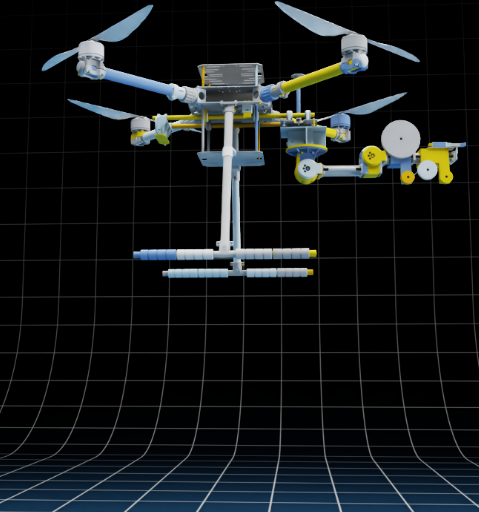

Ongoing project, Flight Systems and Control Lab, UTIAS · Jan 2026–Present
Millions of birds die each year from window collisions. FLAP Canada's guidelines call for dot patterns spaced closely enough on glass to make windows visible to birds, but installing them on tall or hard-to-reach windows is difficult and often skipped. This project designs an aerial manipulator, a robotic arm mounted on a quadcopter, that can autonomously apply these bird-safe markers in place.

Getting there started as an MEng feasibility study: comparing spray-painting, film-perching, and label-applicator concepts before settling on the design above, then getting the CAD into Isaac Sim. The full Onshape assembly (606 parts, mostly fasteners) broke the simulator's articulation on import; rebuilding it as 9 composite rigid bodies with preserved mass properties fixed it and got the vehicle to a stable hover.
The stack runs split across two OSes: NVIDIA Isaac Sim and QGroundControl on Windows, with PX4 SITL and ROS 2 running in WSL2 (Ubuntu 22.04). Isaac Sim owns the physics, articulation, and rendering, while PX4 flies the vehicle over MAVLink exactly as it would on real hardware — so the same autopilot stack carries over to bench and flight testing later. Bridging the two environments reliably took some IP routing and firewall configuration to get MAVLink and ROS 2 traffic crossing the Windows–WSL2 boundary cleanly.

The full system is validated in Isaac Sim before any hardware trials. Simulation surfaced discrepancies invisible to offline validation, joint-frame sign convention mismatches and actuation timing issues, that only showed up once the full coupled dynamics were run together. To tune the controller systematically rather than by hand, I built an automated gain-sweep harness that sweeps controller gains across a range of trajectories and flags instability or poor tracking automatically.
Pick-and-place from a shelf to a lower pillar, exercising the whole-body controller through a larger range of arm motion than a fixed pick point:
Note: the current whole-body controller and pick-and-place validation work runs on a general aerial-manipulator test configuration in Isaac Sim, not yet the bird-safe marker end-effector design shown above — that integration is still ahead.
The repo above has more on the design process, Isaac Sim integration code, and a pick-and-place demo video. The whole-body controller implementation itself isn't included, since it builds on unpublished thesis research by a labmate. Reach out if you'd like more detail in the meantime.